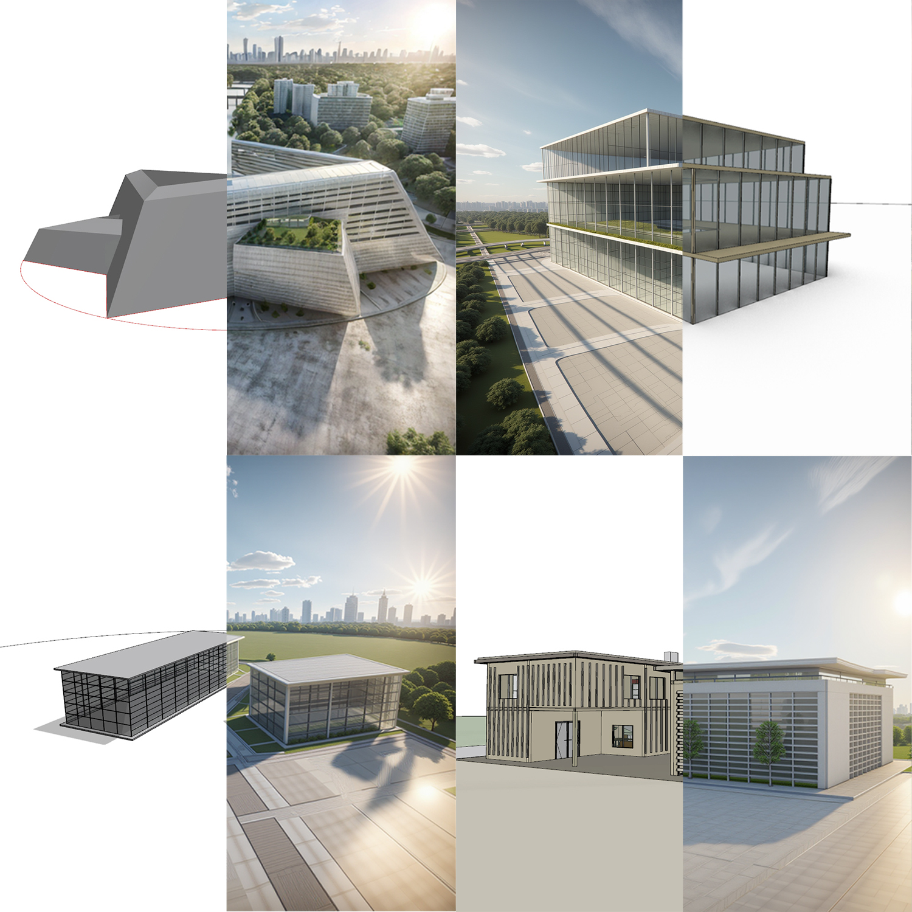

Bridging creative vision with contemporary architectural tools — a curated selection of work across conceptual design, AI visualization, and computational research.
Constructing and evolving geometric systems within Grasshopper, then refining them through fine-tuned AI models. This workflow bridges algorithmic generation with intelligent visual interpretation, producing architectural forms that exceed conventional design methods.
Transforming 3D architectural models into richly rendered AI outputs — bridging the gap between computational modeling and photorealistic visualization through intelligent image synthesis.

Integrating AI-powered real-time rendering directly within the computational design process — enabling dynamic visual feedback during form exploration and igniting deeper conceptual studies.